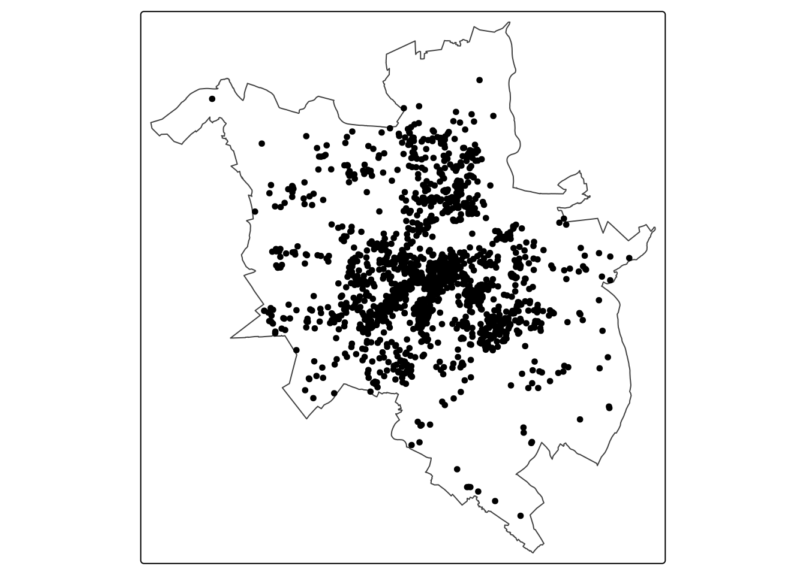
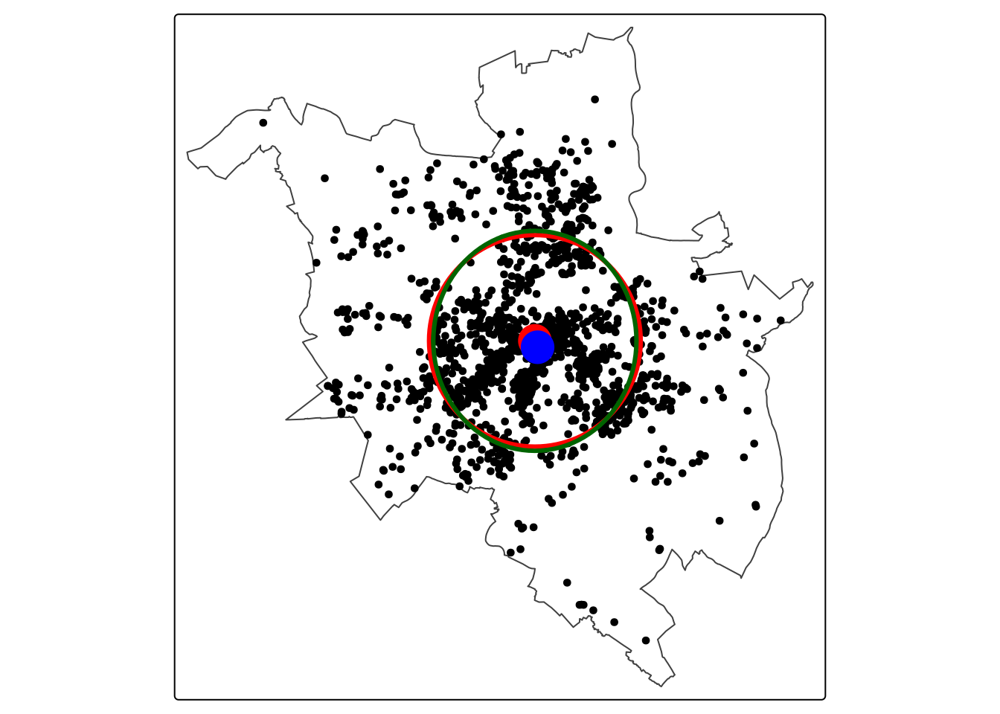
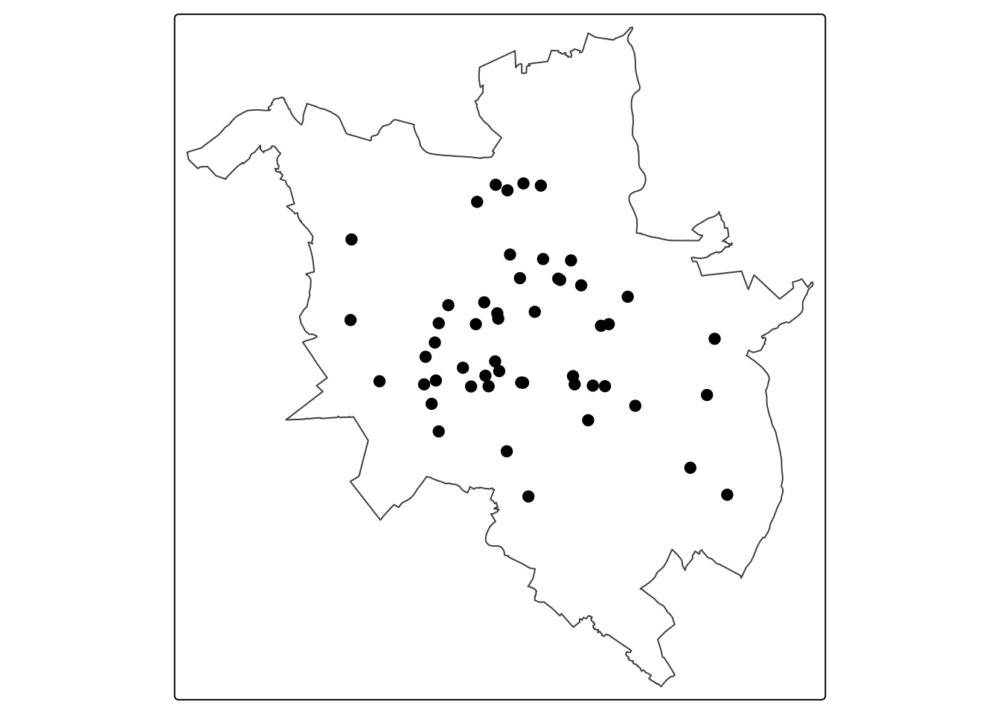
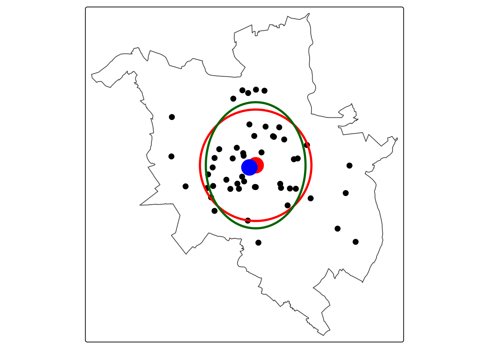

library(sf)
library(sfdep)
library(tmap)
library(dplyr)3 Statystyki centrograficzne
Czego się nauczysz
Po tym rozdziale potrafisz wykonać w R:
- obliczyć średnią centralną i medianę centralną zbioru punktów,
- obliczyć odległość standardową i przedstawić ją na mapie jako okrąg,
- obliczyć elipsę odchylenia standardowego i przedstawić ją na mapie,
- złożyć wszystkie statystyki centrograficzne na jednej mapie wraz z punktami i granicą obszaru analizy.
Rozumiesz i umiesz zinterpretować:
- co opisuje każda z czterech statystyk i czego nie opisuje,
- odległość standardową jako miarę rozproszenia — przez porównanie z wartością dla innego zbioru w tym samym obszarze,
- dlaczego kierunek elipsy w dużej mierze odzwierciedla kształt obszaru badań,
- dlaczego elipsa wyglądająca na bardziej wydłużoną może nieść mniej informacji,
- relację między średnią a medianą centralną jako sprawdzenie wpływu lokalizacji skrajnych.
Teoria: Najważniejsze informacje. Operacje techniczne: Załącznik C. Funkcje: Załącznik B.
3.1 Wprowadzenie
Statystyki centrograficzne są przestrzennym odpowiednikiem statystyk opisowych: tak jak średnia i odchylenie standardowe podsumowują zbiór liczb dwiema wartościami, tak statystyki centrograficzne podsumowują zbiór punktów ich położeniem środkowym, rozproszeniem oraz kierunkiem rozproszenia. Są najprostszą formą opisu rozkładu przestrzennego danych punktowych i pierwszym krokiem analizy.
Statystyki centrograficzne opisują zbiór punktów jako całość. Pytanie o typ rozkładu — losowy, skupiony czy regularny — wymaga zbadania relacji między poszczególnymi punktami i należy do metod opartych na intensywności (Rozdział 4) oraz na odległości (Rozdział 5). Statystyki centrograficzne są natomiast niezastąpione przy porównywaniu zbiorów — dwóch typów obiektów w tym samym obszarze albo tego samego zjawiska w dwóch okresach. Tak też są używane w tym rozdziale: Przykład 1 opisuje rozkład przestępstw, Przykład 2 rozkład szkół, a wnioski płyną z porównania obu.
Definicje statystyk centrograficznych zawiera rozdział teoretyczny części. W tym rozdziale przy każdym kroku podane jest, co dana statystyka mówi o danych.
3.2 Statystyki centrograficzne w R
Statystyki centrograficzne oblicza się funkcjami z pakietu sfdep, działającymi bezpośrednio na obiektach klasy sf.
| Funkcja | Co zwraca |
|---|---|
center_mean() |
średnia centralna — obiekt sfc_POINT |
center_median() |
mediana centralna — obiekt sfc_POINT |
std_distance() |
odległość standardowa — liczba w jednostkach układu współrzędnych |
std_dev_ellipse() |
parametry elipsy: sx, sy, theta oraz geometria średniej centralnej |
st_ellipse() |
zamienia parametry elipsy na obiekt liniowy, który można narysować |
Dwie z nich zwracają liczby, nie geometrię, więc żeby umieścić je na mapie, trzeba je najpierw zamienić na obiekt przestrzenny: odległość standardową funkcją st_buffer(), parametry elipsy funkcją st_ellipse().
3.3 Przykład 1: Przestępczość w Poznaniu
Dane
data/przestepstwa_2019.gpkg— lokalizacje przestępstw w Poznaniu w 2019 roku; warstwa punktowa bez atrybutów, zawiera wyłącznie kolumnę geometrii,data/out_poznan_szkoly.gpkg, warstwagranica— granica miasta Poznania, pozyskana z Bazy Danych Obiektów Topograficznych. Sposób jej przygotowania pokazuje Przykład 2; oba przykłady używają tej samej granicy, więc ich wyniki można porównywać bezpośrednio.
p2019 = read_sf("data/przestepstwa_2019.gpkg")
granica = read_sf("data/out_poznan_szkoly.gpkg", layer = "granica")
nrow(p2019)[1] 1661tm_shape(granica) +
tm_borders() +
tm_shape(p2019) +
tm_dots()
Krok 1: średnia centralna
Średnia centralna to punkt o współrzędnych będących średnimi arytmetycznymi współrzędnych wszystkich punktów zbioru. Odpowiada średniej arytmetycznej w statystyce klasycznej i wskazuje położenie środkowe całego zbioru.
mc = center_mean(p2019)
mcGeometry set for 1 feature
Geometry type: POINT
Dimension: XY
Bounding box: xmin: 358716.4 ymin: 506363.5 xmax: 358716.4 ymax: 506363.5
Projected CRS: ETRF2000-PL / CS92POINT (358716.4 506363.5)Krok 2: mediana centralna
Mediana centralna to punkt o współrzędnych będących medianami współrzędnych, wyznaczanymi osobno dla każdej osi. Tak jak mediana w statystyce klasycznej, jest odporna na wartości skrajne.
md = center_median(p2019)
mdGeometry set for 1 feature
Geometry type: POINT
Dimension: XY
Bounding box: xmin: 358816.1 ymin: 506128.6 xmax: 358816.1 ymax: 506128.6
Projected CRS: ETRF2000-PL / CS92POINT (358816.1 506128.6)Porównanie położenia obu środków jest prostym sprawdzeniem, czy średnia centralna nie jest przesunięta przez nietypowe lokalizacje. Odległość między nimi liczymy funkcją st_distance().
st_distance(mc, md)Units: [m]
[,1]
[1,] 255.1896Krok 3: odległość standardowa
Odległość standardowa to średnia kwadratowa odległości punktów od średniej centralnej:
\[d = \sqrt{\frac{\sum_{i=1}^{n} \left[(x_i - \overline{x_c})^2 + (y_i - \overline{y_c})^2\right]}{n}}\]
Jest odpowiednikiem odchylenia standardowego: opisuje, jak daleko od środka rozproszone są punkty. Wyrażona jest w jednostkach układu współrzędnych — tutaj w metrach, bo dane są w PUWG 1992 (EPSG:2180).
sd_odl = std_distance(p2019)
sd_odl[1] 3886.935Funkcja zwraca liczbę, nie geometrię. Aby przedstawić odległość standardową na mapie jako okrąg o środku w średniej centralnej, tworzymy strefę buforową o promieniu równym tej liczbie.
sd_okrag = st_buffer(mc, sd_odl)Krok 4: elipsa odchylenia standardowego
Elipsa odchylenia standardowego rozdziela rozproszenie na dwa prostopadłe kierunki. Opisują ją trzy parametry: długości półosi sx i sy oraz kąt obrotu theta.
elipsa_par = std_dev_ellipse(p2019)
elipsa_parSimple feature collection with 1 feature and 3 fields
Geometry type: POINT
Dimension: XY
Bounding box: xmin: 358716.4 ymin: 506363.5 xmax: 358716.4 ymax: 506363.5
Projected CRS: ETRF2000-PL / CS92
sx sy theta geometry
1 3731.287 4041.095 136.7049 POINT (358716.4 506363.5)Kąt theta jest azymutem dłuższej osi — mierzony jest zgodnie z ruchem wskazówek zegara od kierunku północnego, w zakresie od 0 do 180°. Półoś sy odpowiada temu kierunkowi, a sx jest do niego prostopadła.
Stosunek dłuższej półosi do krótszej mówi, jak silnie rozkład jest wydłużony. Wartość bliska 1 oznacza rozproszenie jednakowe we wszystkich kierunkach.
elipsa_par$sy / elipsa_par$sx[1] 1.08303Funkcja std_dev_ellipse() zwraca parametry, nie geometrię — obiekt do narysowania tworzy funkcja st_ellipse().
elipsa = st_ellipse(elipsa_par, sx = elipsa_par$sx, sy = elipsa_par$sy)Krok 5: wizualizacja
tm_shape(granica) +
tm_borders() +
tm_shape(p2019) +
tm_dots() +
tm_shape(sd_okrag) +
tm_borders(col = "red", lwd = 3) +
tm_shape(elipsa) +
tm_lines(col = "darkgreen", lwd = 3) +
tm_shape(mc) +
tm_dots(fill = "red", size = 1.5) +
tm_shape(md) +
tm_dots(fill = "blue", size = 1.5)
Interpretacja wyniku
Położenie środkowe. Średnia centralna leży w centralnej części miasta. Mediana centralna leży 255 m od niej, co stanowi zaledwie 7% odległości standardowej. Oba środki praktycznie się pokrywają, więc średnia centralna nie jest zaburzona przez nietypowe lokalizacje — nie ma pojedynczych przestępstw położonych tak daleko od pozostałych, żeby przeciągnąć środek. Gdyby odległość między środkami była znaczna, oznaczałoby to, że część punktów leży skrajnie i że do opisu położenia lepiej użyć mediany.
Rozproszenie. Odległość standardowa wynosi 3887 m. Okrąg o tym promieniu, widoczny na mapie, obejmuje centralną część miasta — przeciętne przestępstwo leży niemal 4 km od środka zbioru. Wartość wyrażona jest w metrach, bo dane są w układzie odwzorowanym PUWG 1992 (EPSG:2180); w układzie współrzędnych geograficznych otrzymalibyśmy stopnie, czyli liczbę bezużyteczną.
Sama ta liczba nie mówi jeszcze, czy jest to dużo, czy mało — nabiera znaczenia dopiero w porównaniu, które wykonamy w Przykładzie 2, gdzie te same statystyki policzymy dla szkół w tym samym obszarze.
Kierunek rozproszenia. Stosunek osi elipsy wynosi 1.08, czyli jest bliski jedności: rozkład jest niemal kolisty. Ma to zasadniczą konsekwencję dla czytania azymutu. Azymut dłuższej osi wynosi wprawdzie 136.7°, co wskazywałoby kierunek NW–SE, ale dla elipsy niemal kolistej azymut nie wskazuje żadnego rzeczywistego kierunku — przy osiach niemal równej długości to, która z nich wypadnie dłuższa, decyduje się na poziomie drobnych różnic.
Kierunek elipsy a kształt obszaru badań
Przed uznaniem kierunku elipsy za właściwość badanego zjawiska porównaj go wzrokowo z granicą obszaru analizy na mapie. Punkty leżą zawsze wewnątrz jakiegoś obszaru, a jeśli obszar jest wydłużony, to wydłużenie przenosi się na elipsę — niezależnie od tego, jak punkty są w nim rozmieszczone. Granica Poznania jest wydłużona w kierunku NW–SE, czyli dokładnie tym, który wskazuje azymut elipsy przestępstw.
Kierunek elipsy interpretuje się więc tylko wtedy, gdy spełnione są dwa warunki: elipsa jest wyraźnie wydłużona (stosunek osi odbiega od jedności) i jej kierunek nie pokrywa się z kierunkiem obszaru badań.
Skąd się biorą te liczby
Warto raz sprawdzić, że funkcje liczą dokładnie to, co podają wzory. Jeśli kiedyś nie będziesz pewna, co dana funkcja oblicza, najprostszą drogą jest odtworzenie jej na małym przykładzie.
Funkcja st_coordinates() wydobywa współrzędne z obiektu punktowego do macierzy o dwóch kolumnach.
xy = st_coordinates(p2019)
head(xy) X Y
[1,] 361379.5 503546.3
[2,] 361691.3 503694.6
[3,] 360347.3 506216.0
[4,] 353099.3 504204.1
[5,] 361715.2 503305.9
[6,] 360260.9 510415.0Średnia centralna to po prostu średnie arytmetyczne obu kolumn:
apply(xy, 2, mean) X Y
358716.4 506363.5 Odległość standardowa to średnia kwadratowa odległości od tego punktu:
mc_xy = apply(xy, 2, mean)
sqrt(sum((xy[, 1] - mc_xy[1])^2 + (xy[, 2] - mc_xy[2])^2) / nrow(xy))[1] 3886.935Oba wyniki zgadzają się z wartościami zwróconymi przez center_mean() i std_distance():
all.equal(as.numeric(mc_xy), as.numeric(st_coordinates(mc)))[1] TRUEall.equal(sqrt(sum((xy[, 1] - mc_xy[1])^2 + (xy[, 2] - mc_xy[2])^2) / nrow(xy)),
as.numeric(sd_odl))[1] TRUEW analizie używamy funkcji z pakietu sfdep, a nie obliczeń ręcznych — są krótsze, nie da się w nich pomylić indeksu kolumny i zwracają gotowe obiekty przestrzenne. Powyższe porównanie pokazuje jedynie, że nie ma między nimi różnicy.
3.4 Przykład 2: Szkoły podstawowe w Poznaniu
W tym przykładzie kod i wyniki są podane, natomiast interpretacji nie ma w tekście. Przeczytaj wyniki samodzielnie, odpowiedz na pytania na końcu przykładu, a następnie rozwiń bloki z odpowiedziami i sprawdź swoją interpretację.
Przygotowanie danych
Dane pochodzą z Bazy Danych Obiektów Topograficznych (BDOT10k): warstwa budynków OT_BUBD_A oraz warstwa granic administracyjnych OT_ADJA_A. Kod poniżej pokazuje, jak z nich powstał plik używany w tym i w dwóch kolejnych rozdziałach. Techniki — selekcja atrybutowa, złączenie obiektów, zamiana poligonów na punkty, zapis warstw do geopaczki — opisuje Rozdział 1 i Załącznik C.
Plik wynikowy data/out_poznan_szkoly.gpkg jest dostarczony razem z danymi do skryptu, więc tych kroków nie trzeba powtarzać.
Jedna szkoła, kilka budynków
Warstwa OT_BUBD_A zawiera budynki, nie instytucje. Szkoła zajmująca kilka budynków — budynek dydaktyczny, salę gimnastyczną, warsztaty — występuje w niej wielokrotnie. Selekcja po funkcji budynku daje 84 obiekty, ale odpowiadają one 51 szkołom: 34 szkoły mają jeden budynek, 12 ma dwa, cztery mają od trzech do pięciu, a jedna aż dziesięć.
Gdybyśmy pozostawili 84 punkty, każda analiza rozkładu przestrzennego opisywałaby rozmieszczenie budynków szkolnych, a nie szkół — a odległości między budynkami tej samej szkoły (kilkadziesiąt metrów) zdominowałyby wyniki metod opartych na odległości (Rozdział 5).
Dlatego budynki tej samej szkoły scalamy. Kluczem jest atrybut INFORMACJADODATKOWA, który zawiera nazwę szkoły. Funkcja summarise() na obiekcie klasy sf łączy geometrie w obrębie grupy, a st_centroid() zamienia wynik na jeden punkt reprezentujący szkołę.
# granica miasta z warstwy granic administracyjnych
granica = read_sf("data/bdot10k/PL.PZGiK.308.BDOT10k.3064__OT_ADJA_A.gpkg")
granica = granica[granica$RODZAJ == "powiat", "geometria"]
# selekcja budynków szkół podstawowych z warstwy budynków
budynki = read_sf("data/bdot10k/PL.PZGiK.308.BDOT10k.3064__OT_BUBD_A.gpkg")
budynki_szkol = budynki |>
filter(PRZEWAZAJACAFUNKCJABUDYNKU == "szkoła podstawowa")
# scalenie budynków tej samej szkoły i zamiana na punkty:
# INFORMACJADODATKOWA zawiera nazwę szkoły, summarise() łączy geometrie w grupie
szkoly = budynki_szkol |>
group_by(nazwa = INFORMACJADODATKOWA) |>
summarise(liczba_budynkow = n()) |>
st_centroid()
st_write(szkoly, dsn = "data/out_poznan_szkoly.gpkg", layer = "szkoly", delete_dsn = TRUE)
st_write(granica, dsn = "data/out_poznan_szkoly.gpkg", layer = "granica")Dane
Granica miasta została wczytana już w Przykładzie 1 — w tym przykładzie używamy tego samego obiektu. Dochodzi tylko warstwa punktowa ze szkołami.
szkoly = read_sf("data/out_poznan_szkoly.gpkg", layer = "szkoly")
nrow(szkoly)[1] 51tm_shape(granica) +
tm_borders() +
tm_shape(szkoly) +
tm_dots(size = 0.5)
Krok 1: obliczenie statystyk centrograficznych
sz_mc = center_mean(szkoly)
sz_md = center_median(szkoly)
sz_sd = std_distance(szkoly)
sz_elipsa_par = std_dev_ellipse(szkoly)
sz_sd[1] 4188.111st_distance(sz_mc, sz_md)Units: [m]
[,1]
[1,] 498.6045sz_elipsa_parSimple feature collection with 1 feature and 3 fields
Geometry type: POINT
Dimension: XY
Bounding box: xmin: 358275.3 ymin: 506463.5 xmax: 358275.3 ymax: 506463.5
Projected CRS: ETRF2000-PL / CS92
sx sy theta geometry
1 3745.387 4741.78 120.4591 POINT (358275.3 506463.5)sz_elipsa_par$sy / sz_elipsa_par$sx[1] 1.266032Krok 2: wizualizacja
sz_okrag = st_buffer(sz_mc, sz_sd)
sz_elipsa = st_ellipse(sz_elipsa_par, sx = sz_elipsa_par$sx, sy = sz_elipsa_par$sy)
tm_shape(granica) +
tm_borders() +
tm_shape(szkoly) +
tm_dots(size = 0.5) +
tm_shape(sz_okrag) +
tm_borders(col = "red", lwd = 3) +
tm_shape(sz_elipsa) +
tm_lines(col = "darkgreen", lwd = 3) +
tm_shape(sz_mc) +
tm_dots(fill = "red", size = 1.5) +
tm_shape(sz_md) +
tm_dots(fill = "blue", size = 1.5)
Krok 3: porównanie z przestępstwami
Oba przykłady używają tej samej granicy i tego samego obszaru odniesienia, więc wyniki można porównywać bezpośrednio.
st_area(granica)261673672 [m^2]| przestępstwa | szkoły | |
|---|---|---|
| liczba punktów | 1661 | 51 |
| odległość standardowa [m] | 3887 | 4188 |
| stosunek osi elipsy | 1.08 | 1.27 |
| azymut dłuższej osi [°] | 136.7 | 120.5 |
| odległość średnia↔︎mediana [m] | 255 | 499 |
Sprawdź swoją interpretację
Pytanie 1. Odległość standardowa szkół (4188 m) jest większa niż przestępstw (3887 m). Co to znaczy? Czy porównanie tych dwóch liczb jest uprawnione?
Sprawdź odpowiedź
Szkoły są bardziej rozproszone niż przestępstwa — ich chmura punktów jest przeciętnie szersza względem swojego środka. Ma to sens merytoryczny: szkoły podstawowe rozmieszcza się tak, by obsługiwały całe miasto, w tym osiedla peryferyjne, natomiast przestępstwa koncentrują się w centrum.
Porównanie jest uprawnione, bo oba zbiory dotyczą tego samego obszaru — w obu przykładach użyto tej samej warstwy granica, o powierzchni ok. 262 km².
Gdyby obszary były różne, porównywanie odległości standardowych nie miałoby sensu: większy obszar z natury daje większe rozproszenie, niezależnie od tego, jak rozmieszczone są w nim punkty. To warunek, który trzeba sprawdzić przed porównaniem, a nie po — i który w analizie dwóch różnych zjawisk w „tym samym mieście” bardzo łatwo przeoczyć, bo granice miasta z dwóch różnych źródeł danych nigdy nie są dokładnie takie same.
Różnica wynosi 301 m, czyli około 8% — jest więc wyraźna, ale nie dramatyczna. Oba zjawiska koncentrują się w tym samym mieście, a szkoły są rozłożone trochę szerzej.
Pytanie 2. Elipsa szkół jest wyraźniej wydłużona (stosunek osi 1.27) niż elipsa przestępstw (1.08). Czy to znaczy, że szkoły są bardziej kierunkowo rozmieszczone?
Sprawdź odpowiedź
Nie — i jest to najmniej oczywisty wniosek w tym rozdziale.
Po pierwsze, oba stosunki są bliskie jedności. Elipsa o osiach różniących się o 8% i o 27% to w obu przypadkach kształt bliski koła, a dla kształtu bliskiego koła kierunek dłuższej osi nie jest wielkością dobrze określoną.
Po drugie, i ważniejsze: elipsa szkół wyliczona jest z 51 punktów, a elipsa przestępstw z 1661. Kształt wyliczony z kilkudziesięciu obserwacji jest w dużej mierze dziełem przypadku — wystarczy, że kilka szkół leży na obrzeżach miasta w jednym kierunku, żeby elipsa się wydłużyła. Przy ponad tysiącu punktów taki efekt się nie zdarza.
Czyli: elipsa, która wygląda na bardziej wydłużoną, niesie mniej informacji, bo opiera się na 33 razy mniejszej liczbie punktów. To ta sama zasada, co przy czytaniu wykresu pudełkowego razem z liczebnością grup (Rozdział 2).
Pytanie 3. Azymut dłuższej osi dla szkół wynosi 120.5°, a dla przestępstw 136.7° — różnica wynosi 16.2°. Czy to znaczy, że oba zjawiska mają różny kierunek rozproszenia?
Sprawdź odpowiedź
Nie można tego stwierdzić. Oba stosunki osi są bliskie jedności, a azymut elipsy niemal kolistej jest wielkością słabo określoną — przy osiach różniących się o kilka czy dwadzieścia procent niewielka zmiana w położeniu kilku punktów potrafi obrócić dłuższą oś o kilkadziesiąt stopni. Różnica 16.2° między dwiema niemal kolistymi elipsami nie jest więc różnicą kierunku.
Dodatkowo azymut elipsy przestępstw pokrywa się z kierunkiem wydłużenia samego Poznania, co widać na mapie — a to kolejny powód, by go nie czytać jako właściwości zjawiska.
Zasada: kierunek elipsy interpretuje się tylko wtedy, gdy elipsa jest wyraźnie wydłużona i gdy jej kierunek nie pokrywa się z kierunkiem obszaru badań. W pozostałych przypadkach azymut jest liczbą, którą funkcja zwraca, ale która nie opisuje niczego istotnego.
Pytanie 4. Odległość między średnią a medianą centralną wynosi dla szkół 499 m, a dla przestępstw 255 m. Czy dla szkół średnia centralna jest zaburzona przez nietypowe lokalizacje?
Sprawdź odpowiedź
Nie. Liczbę metrów trzeba odnieść do skali rozproszenia zbioru, a nie oceniać bezwzględnie. Dla szkół odległość między środkami stanowi 12% odległości standardowej, dla przestępstw 7%. W obu przypadkach jest to wartość niewielka, więc oba środki opisują to samo położenie i średnia centralna jest bezpieczną miarą.
Bezwzględnie większa odległość dla szkół (499 m wobec 255 m) wynika głównie z tego, że przy 51 punktach mediana współrzędnych jest mniej stabilna niż przy 1661 — nie z obecności lokalizacji skrajnych.
3.5 Pytania kontrolne
1. Na jakie pytania badawcze odpowiadają statystyki centrograficzne?
Sprawdź odpowiedź
Na pytania o położenie środkowe, wielkość rozproszenia i kierunek rozproszenia zbioru punktów traktowanego jako całość.
Pytanie o typ rozkładu — losowy, skupiony czy regularny — wymaga zbadania relacji między poszczególnymi punktami i należy do metod opartych na intensywności (Rozdział 4) oraz na odległości (Rozdział 5).
2. Czym różni się średnia centralna od mediany centralnej i po co liczyć obie?
Sprawdź odpowiedź
Średnia centralna to punkt o współrzędnych będących średnimi arytmetycznymi współrzędnych, mediana centralna — medianami współrzędnych, wyznaczanymi osobno dla każdej osi. Mediana jest odporna na wartości skrajne.
Obie liczy się po to, żeby je porównać. Jeśli leżą blisko siebie (w stosunku do odległości standardowej), średnia centralna dobrze opisuje położenie zbioru. Jeśli są wyraźnie odległe, w zbiorze są lokalizacje skrajne przeciągające średnią i lepszym opisem jest mediana.
Uwaga terminologiczna: tak zdefiniowana mediana centralna nie jest punktem minimalizującym sumę odległości do wszystkich punktów, czyli medianą geometryczną.
3. W jakich jednostkach wyrażona jest odległość standardowa i od czego to zależy?
Sprawdź odpowiedź
W jednostkach układu współrzędnych, w którym zapisane są dane. Dla danych w układzie odwzorowanym, takim jak PUWG 1992 (EPSG:2180), są to metry. Dla danych w układzie współrzędnych geograficznych byłyby to stopnie, co czyni wynik bezużytecznym — dlatego przed obliczeniem statystyk centrograficznych dane należy przekształcić do układu odwzorowanego (Rozdział 1).
4. Dlaczego liczba „odległość standardowa = 3887 m” sama w sobie niczego nie opisuje?
Sprawdź odpowiedź
Bo nie ma do czego jej odnieść. Ta sama liczba oznacza silne skupienie w obszarze o średnicy 50 km i rozproszenie w obszarze o średnicy 5 km. Potrzebny jest punkt odniesienia: wartość dla innego zbioru w tym samym obszarze albo dla tego samego zbioru w innym okresie.
W tym rozdziale punktem odniesienia był drugi zbiór: szkoły podstawowe w tym samym mieście, dla których odległość standardowa wynosi 4188 m. Dopiero to porównanie pozwala powiedzieć, że przestępstwa są rozłożone ciaśniej niż szkoły.
5. Dlaczego kierunek elipsy odchylenia standardowego trzeba porównać z kształtem obszaru badań?
Sprawdź odpowiedź
Ponieważ punkty leżą wewnątrz obszaru, a jeśli obszar jest wydłużony, to wydłużenie przenosi się na elipsę — niezależnie od tego, jak punkty są w nim rozmieszczone. Granica Poznania jest wydłużona w kierunku NW–SE i azymut elipsy przestępstw (136.7°) wskazuje dokładnie ten kierunek. Wniosek „przestępstwa układają się w kierunku NW–SE” byłby więc wnioskiem o kształcie miasta, nie o przestępczości.
Porównanie jest proste: elipsa i granica są na tej samej mapie.
6. Dlaczego elipsa wyliczona z 51 punktów jest mniej wiarygodna niż elipsa wyliczona z 1661 punktów, nawet jeśli wygląda na bardziej wydłużoną?
Sprawdź odpowiedź
Bo przy małej liczbie punktów kształt elipsy w dużej mierze zależy od przypadku. Wystarczy, że kilka z 51 szkół leży na obrzeżach miasta w jednym kierunku, żeby elipsa wyraźnie się wydłużyła. Przy 1661 punktach pojedyncze lokalizacje nie mają takiego wpływu — elipsa opisuje wtedy rzeczywisty kształt chmury punktów.
To ta sama zasada, którą stosowaliśmy do wykresu pudełkowego w Rozdział 2: kształt wyliczony z małej liczby obserwacji trzeba czytać razem z tą liczbą.
7. Które dwie funkcje
sfdepzwracają liczby, a nie geometrię, i jak umieścić ich wynik na mapie?
Sprawdź odpowiedź
std_distance() zwraca jedną liczbę — odległość w jednostkach układu współrzędnych. Aby narysować ją jako okrąg, tworzy się strefę buforową wokół średniej centralnej: st_buffer(mc, sd_odl).
std_dev_ellipse() zwraca parametry sx, sy, theta. Obiekt liniowy do narysowania tworzy funkcja st_ellipse().
Funkcje center_mean() i center_median() zwracają gotowe obiekty punktowe i można je podać wprost do tm_shape().
3.6 Podsumowanie
| Statystyka | Funkcja | Co mówi o danych | Warunek poprawnego odczytu |
|---|---|---|---|
| średnia centralna | center_mean() |
położenie środkowe zbioru | wrażliwa na lokalizacje skrajne — czytana razem z medianą centralną |
| mediana centralna | center_median() |
położenie środkowe odporne na lokalizacje skrajne | jest medianą współrzędnych liczoną osobno dla każdej osi, nie medianą geometryczną |
| odległość standardowa | std_distance() |
wielkość rozproszenia wokół średniej centralnej, w jednostkach układu | wymaga punktu odniesienia: innego zbioru albo innego okresu |
| elipsa odchylenia standardowego | std_dev_ellipse() + st_ellipse() |
rozproszenie rozdzielone na dwa prostopadłe kierunki | kierunek jest wiarygodny przy wyraźnym wydłużeniu i po porównaniu z kształtem obszaru |
Trzy zasady, do których wracamy w kolejnych rozdziałach:
- Statystyka centrograficzna wymaga punktu odniesienia. Liczba sama w sobie nie jest interpretowalna — porównujemy ją z wartością dla innego zbioru w tym samym obszarze albo dla tego samego zbioru w innym okresie.
- Przed porównaniem dwóch zbiorów sprawdź, czy dotyczą tego samego obszaru. Większy obszar z natury daje większe rozproszenie.
- Kształt wyliczony z małej liczby punktów czytaj razem z tą liczbą. Im mniej punktów, tym szerszy zakres wartości, które daje sam przypadek.
3.7 Pytania dla dwóch kolejnych rozdziałów
Cztery policzone w tym rozdziale statystyki opisują zbiór punktów jako całość: gdzie leży jego środek, jak szerokie jest rozproszenie i czy ma ono wyraźny kierunek. Typ rozkładu — losowy, skupiony czy regularny — jest własnością relacji między poszczególnymi punktami, więc wymaga innych narzędzi. Dwa zbiory o identycznej średniej centralnej i identycznej odległości standardowej mogą być skrajnie różne: jeden równomiernie rozłożony, drugi zebrany w kilka ciasnych skupień.
Porównanie danych obserwowanych z rozkładem losowym jest zadaniem metod z dwóch kolejnych rozdziałów:
| Pytanie | Metoda | Rozdział |
|---|---|---|
| Czy intensywność punktów jest stała w obszarze? | test zliczania w kwadratach | Rozdział 4 |
| Gdzie są obszary zagęszczenia? | estymacja gęstości jądra | Rozdział 4 |
| Czy punkty leżą bliżej siebie, niż wynikałoby z przypadku? | statystyki najbliższego sąsiada, wskaźnik Clarka-Evansa | Rozdział 5 |
| Czy odstępstwo od losowości jest istotne statystycznie? | funkcja G z obwiednią | Rozdział 5 |
Statystyk centrograficznych nie porównujemy z rozkładem losowym
Odległość standardowa 3887 m nabiera znaczenia dopiero po zestawieniu z inną liczbą, więc kuszące jest wylosowanie punktów w tym samym obszarze i porównanie z nimi. Właściwy tok postępowania jest inny. Jednorazowe wylosowanie punktów nie jest testem statystycznym, a wniosek wyciągnięty z takiego porównania nie ma określonej wiarygodności.
Porównanie z rozkładem losowym wymaga właściwego narzędzia — wielokrotnej symulacji i obwiedni — i jest treścią Rozdział 5. Statystyki centrograficzne liczymy dla danych i porównujemy między zbiorami danych, tak jak w tym rozdziale porównaliśmy przestępstwa ze szkołami.
3.8 Pełny kod analizy
Poniżej zebrany jest cały kod obu przykładów, w kolejności wykonania — do skopiowania do własnego skryptu zamiast przeklejania pojedynczych fragmentów. Nie ma w nim kodu objaśniającego: to dokładnie ta ścieżka, która prowadzi od danych wejściowych do wyniku. Przykład 2 korzysta z obiektów utworzonych w Przykładzie 1, więc kod uruchamia się w całości, od początku.
library(sf)
library(sfdep)
library(tmap)
library(dplyr)
p2019 = read_sf("data/przestepstwa_2019.gpkg")
granica = read_sf("data/out_poznan_szkoly.gpkg", layer = "granica")
nrow(p2019)
tm_shape(granica) +
tm_borders() +
tm_shape(p2019) +
tm_dots()
mc = center_mean(p2019)
mc
md = center_median(p2019)
md
st_distance(mc, md)
sd_odl = std_distance(p2019)
sd_odl
sd_okrag = st_buffer(mc, sd_odl)
elipsa_par = std_dev_ellipse(p2019)
elipsa_par
elipsa_par$sy / elipsa_par$sx
elipsa = st_ellipse(elipsa_par, sx = elipsa_par$sx, sy = elipsa_par$sy)
tm_shape(granica) +
tm_borders() +
tm_shape(p2019) +
tm_dots() +
tm_shape(sd_okrag) +
tm_borders(col = "red", lwd = 3) +
tm_shape(elipsa) +
tm_lines(col = "darkgreen", lwd = 3) +
tm_shape(mc) +
tm_dots(fill = "red", size = 1.5) +
tm_shape(md) +
tm_dots(fill = "blue", size = 1.5)
szkoly = read_sf("data/out_poznan_szkoly.gpkg", layer = "szkoly")
nrow(szkoly)
tm_shape(granica) +
tm_borders() +
tm_shape(szkoly) +
tm_dots(size = 0.5)
sz_mc = center_mean(szkoly)
sz_md = center_median(szkoly)
sz_sd = std_distance(szkoly)
sz_elipsa_par = std_dev_ellipse(szkoly)
sz_sd
st_distance(sz_mc, sz_md)
sz_elipsa_par
sz_elipsa_par$sy / sz_elipsa_par$sx
sz_okrag = st_buffer(sz_mc, sz_sd)
sz_elipsa = st_ellipse(sz_elipsa_par, sx = sz_elipsa_par$sx, sy = sz_elipsa_par$sy)
tm_shape(granica) +
tm_borders() +
tm_shape(szkoly) +
tm_dots(size = 0.5) +
tm_shape(sz_okrag) +
tm_borders(col = "red", lwd = 3) +
tm_shape(sz_elipsa) +
tm_lines(col = "darkgreen", lwd = 3) +
tm_shape(sz_mc) +
tm_dots(fill = "red", size = 1.5) +
tm_shape(sz_md) +
tm_dots(fill = "blue", size = 1.5)
st_area(granica)